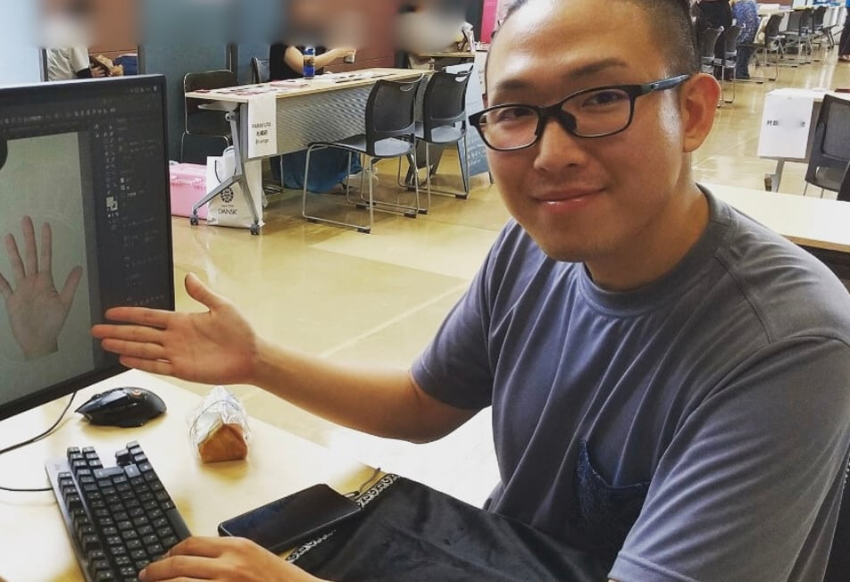
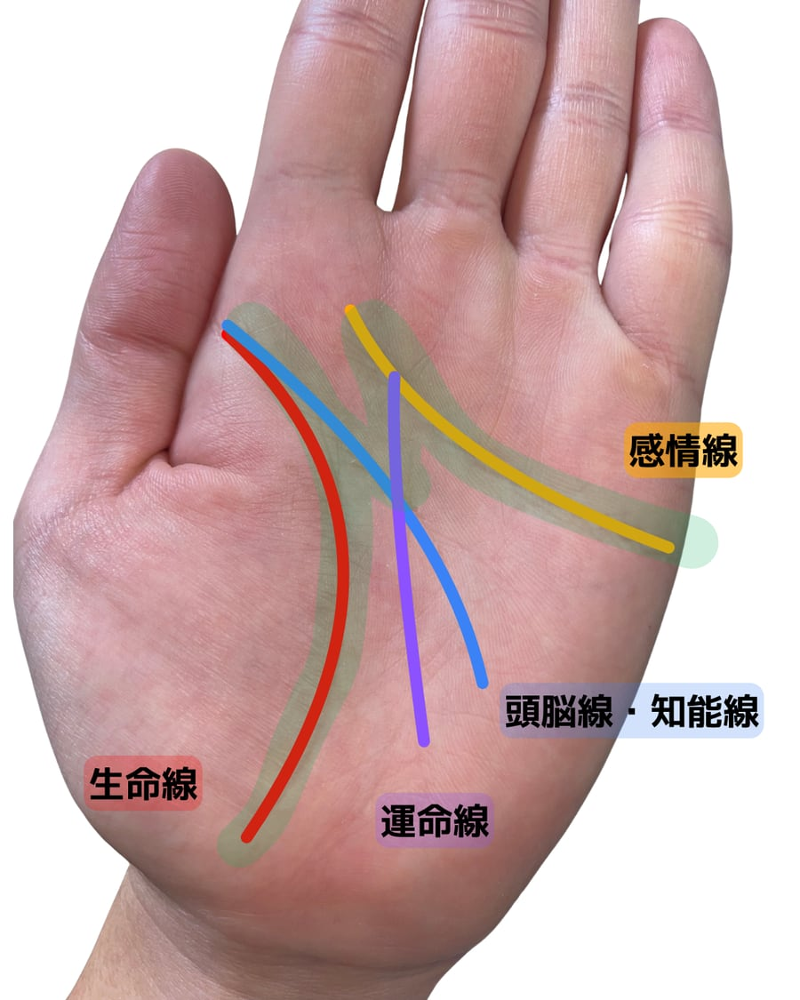
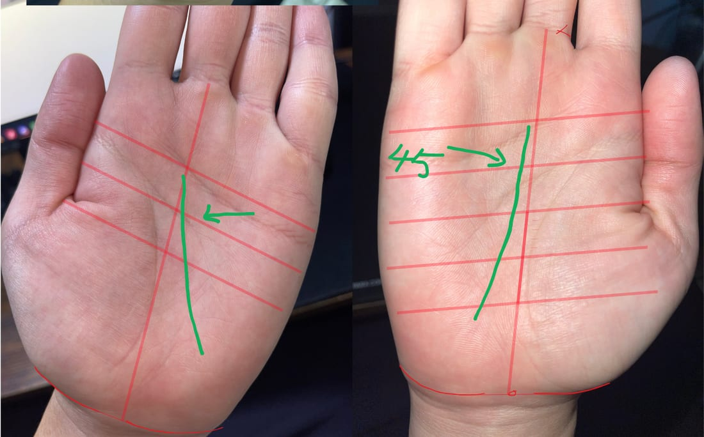

本・通信講座・動画で、手相を学んできた方へ
線の意味は言える。なのに、鑑定にならない。
何線なのかわからない手で、止まる。
読めても、相談にどう答えればいいか、詰まる。
足りないのは、知識の量ではありません。
拾った情報を「扱う」技術です。
線を分解して本質をつかみ、悩みから逆算して扱う。
手相一本で鑑定を組み立てる方法を、全7章・マンツーマンで答え合わせしながら身につける「手相本講座」。
講師本人が返信します。受講をすすめるための面談ではありません。

手相の学びは、
2か所で止まる。
手相学会に届く質問を見ていると、止まる場所は、大きく2つに分かれます。
1拾う
手から、情報を読み取るところで止まる
- 線が入り組んでいて、どれが何線なのかわからない。
- 本のイラストと、目の前の手がまるで違う。
- マスカケ、何本もある感情線、切れ切れの線を前に、手が止まる。
2扱う
読み取った情報を、鑑定に組み立てるところで止まる
- 読んだ性格どうしが矛盾して、どちらを取ればいいかわからない。
- 「結局、この人はどういう人か」を言い切れない。
- 意味は伝えたのに、相談された悩みの答えになっていない。
多くの人が時間をかけてきたのは、
1つ目の「拾う」ほう。
そして、学ぶほど増えていくのが、
2つ目の「扱う」で止まる質問です。
覚えた量が、
足りないわけでは
ありません。
-
名前が、意味を縛る
本やSNSで出会う手相の多くは、線や印の「名前」と「意味」のセットです。覚えやすい反面、意味が名前に引っ張られます。本と違う形の線は拾えず、拾えても意味が固まったままで、ほかの情報と組み合わせられません。
-
手から見ると、悩みに届かない
「この線がある。だから、あなたは〇〇」。手から入る読み方では、相談者の悩みに関係のない情報まで並べてしまいます。
-
すり合わせる相手がいない
本に書いてあるのは、書いた人の見立てです。目の前の手とすり合わせる作業が欠かせませんが、ひとりでやるとものすごく時間がかかり、合っているかどうかの答え合わせもできません。
必要なのは、
もっと覚えることではなく、
情報の本質をつかんで
「拾う」こと。拾った情報を、悩みに合わせて
「扱う」こと。
この講座では、この2つを順番に身につけます。
拾う ― 分解する
分解するのは、
名前ではなく
「本質」を
見るため。
たとえば、ラッキーM。
「幸運の相」と覚えてしまうと、そこから先は読めません。

ラッキーMは、1本の特別な線ではありません。
感情線・頭脳線・生命線・運命線が重なって、Mの形に見えているものです。
重なっている線を1本ずつ分けて読むと、「ラッキー」の一言ではなく、
- 感情線
- 感情の出し方
- 頭脳線
- 考え方
- 生命線
- 行動・活動
- 運命線
- 何をしたいか、何をすべきか
の組み合わせとして、その人を深く読めます。
印や名前のついた線の多くは、線の集まりです。
分解できれば、名前を覚え続けなくても、本にない形まで読めます。
扱う ― 悩みから逆算する
「この線があるから」ではなく、
「この悩みだから、ここを見る」。
拾った情報を、どう扱うか。ここが、鑑定になるかどうかの分かれ目です。
相談「転職したいんです」
手から読む
「覇王線がありますね。強運の相なので、転職もうまくいきますよ」
相談者には、「どんな仕事が合うの？」「いつ動けばいいの？」が残ります。
悩みから読む
-
STEP 1
悩みから、引き出す情報を選ぶ
転職の答えに必要なのは、その人の才能、考え方、行動の特性。そして、動く時期。手を見るのは、これを決めてからです。
-
STEP 2
手から拾う
才能・考え方・行動の特性にあたる情報を、手形・丘・線から拾います。
-
STEP 3
組み立てる
拾った情報を組み合わせて、どんな仕事や環境なら力を発揮しやすいか（適職）を分析します。いまの仕事とのズレも、ここで見えてきます。
-
STEP 4
時期を出す
流年から、動きやすい時期を特定します。過去の出来事をうかがって照らし合わせ、時期の読みを確かめます。
※ 講座で扱う考え方を説明するための例です。
拾う技術と、扱う技術。
両方そろって、はじめて鑑定になります。
ひとりでは時間がかかる
「すり合わせ」に、
講師が付き合います。
本の知識と、目の前の手。そのズレをすり合わせ、仮説を立てて確かめる。この繰り返しで、点と点がつながり、形が見えてきます。ただ、全部をひとりでやろうとすると、ものすごく時間がかかります。
占いを深めることに、ゴールはありません。けれど、鑑定で使える実用のレベルまでは、講座の中で一緒に引き上げていけます。

1回の授業の流れ
はじめに
あなたの質問から
前回から気になっていた手、うまく読めなかった鑑定を持ち込めます。
解説
その章の考え方を、実際の手の写真で
実践
拾う→扱うを、一緒に
あなたの見立てと、講師の見立てを照らし合わせます。
おわりに
次回までの練習
進め方
- 持ち込めるもの自分の手、家族や知人の手、鑑定したお客様の手。
- 流年自分で作図して、講師の作図と照らし合わせます。いちばん実践に時間をかける章なので、進み具合に合わせて回数を調整します。
- 質問受講期間中は、公式LINEで質問できます。講座の外で出会った「わからない手」も送ってください。
- 復習毎回の録画と、章ごとのスライド（約400ページ）・副読本で、あとから見返せます。
- 日程曜日・時間・ペースは、相談して決めます。PCの操作が不安な方には、やり方を合わせます。
全7章。
拾う力から、扱う力へ。
-
第1章
土台
手相学編
手相が何を映しているのか。線を覚える前に「何から見るか」の順序を身につけます。
-
第2章
拾う
手形・指編
線を見る前に、手全体を見る。手形の4分類と指の役割から、その人の土台を読みます。
-
第3章
拾う
丘編
丘の役割と、複雑な丘の読み分け。線を引くエネルギーがどこから来るのかがわかります。
-
第4章
拾う
３大線編
感情線・頭脳線・生命線を、長さ・高さ・向きで読み分けます。複雑な三大線、マスカケ、障害線まで。いちばんボリュームのある章です。
-
第5章
拾う→扱う
リソース・その他の線編
線が多いほど良い、ではない理由。持っているエネルギーの配分から、拾った情報どうしの関係を読みます。
-
第6章
扱う
流年編
手相から「時期」を出す技術。自分で作図し、講師の作図と照らし合わせます。いちばん実践に時間をかける章です。
-
第7章
扱う
悩みへのアプローチ方法
悩みから逆算して必要な情報を拾い、人物像と起きる場面を組み立て、動き方と時期まで伝える。鑑定を組み立てる章です。
いまの自分に必要なのはどの章か。面談で一緒に確認できます。
自分に必要な章を面談で確認する「この線は見れるのに、
なぜこの悩みに
答えられないのか」。
私も、そこで止まりました。
手相のマヨネリ手相研究家／札幌
実家にあった古い手相の本をきっかけに、独学で手相を始めて10年以上。あとになって、祖父が手相家だったことを知りました。
あらゆるパターンを見れるようになった、と自信を持っていた時期があります。けれど、いろいろな人の手を見るうちに、「なぜこの手が読めないのか」「この線は見れるのに、なぜこの悩みを解決できないのか」という壁にぶつかりました。
そこから、情報を「拾う」ことと「扱う」ことを分けて考えるようになりました。仮説を立て、鑑定で確かめ、合わなければ直す。流年も、その繰り返しの中で改良を続けている方法です。
いまは手相一本で鑑定しています。この講座でお渡しするのは、ほかの占術に頼らず、手相だけで鑑定を組み立てる方法です。
「悪い手相」という見方はしません。比べる相手は、いつもその人自身です。
無料で続けていること
- 手相学会LINEオープンチャット。6年間、手相の質問に答え続けています
- 手相用語集
- 手相クイズ
- YouTube 体験手相講座
この講座が、向いている人。
向いていない人。
向いている人
- 本や講座で学んできたのに、目の前の手で止まる。
- 意味は言えるのに、相談にどう答えればいいか詰まる。
- 自分の見立てが合っているか、確かめる相手がほしい。
- 手相一本で、鑑定を組み立てられるようになりたい。
向いていない人
- 短い期間で、資格や肩書きがほしい。この講座に資格・認定はありません。
- 線や印の意味の一覧がほしい。手相用語集や、動画の手相講座のほうが合っています。
- 授業のあと、練習する時間が取れない。
受講料と条件
- 受講料
- ¥350,000（税込）
- 形式
- オンライン・マンツーマン
- 内容
- 全7章
- 回数・期間
- 全12回・約3ヶ月が目安（1回90分以上）
進み具合に合わせて回数を調整します - 教材
- 章ごとのスライド 約400ページ
副読本
毎回の授業の録画 - サポート
- 受講期間中の公式LINEでの質問
- お支払い
- 銀行振込・PayPay（分割払いもできます）
- 資格・認定
- ありません
- 返金
- 初回の受講後に合わないと感じた場合の返金があります（よくある質問）
学び方で選ぶ
独学（本・動画）
費用をおさえて、まず知識を集めたい人に。
資格講座
短い期間で資格を取りたい人に。
動画の手相講座章別 ¥5,000〜／7章セット ¥168,000
自分のペースで知識を学びたい人に。7章セットは講師への1対1の質問（60分×4回）つき。
鑑定攻略セッション60分 ¥5,500〜
鑑定で詰まった1件を持ち込み、講師と1対1で解きたい人に。
手相本講座¥350,000
知識を、目の前の手と相談者の悩みに使えるようになりたい人に。個別指導・手の持ち込み・流年作図の添削つき。
よくある質問
まだ「何線か」で止まる段階ですが、受けられますか？
受けられます。第2章から第4章で、線以外の要素と、線の拾い方から進めます。いまどこで止まっているかは、面談で一緒に確認しましょう。
すでに鑑定をしています。基礎からやり直しになりますか？
いまの見方をうかがったうえで、どこに時間をかけるかを面談で相談します。
仕事や家事と両立できますか？
曜日・時間・ペースは、相談して決めます。毎回の録画とスライド・副読本で、あとから見返せます。
PCの操作が苦手です。
授業はビデオ通話で行います。流年の作図ではPCを使いますが、操作が不安な方には、やり方を合わせます。
予定より長くかかったら、どうなりますか？
流年など、実践に時間がかかる章があります。進み具合に合わせて回数を調整します。
資格はもらえますか？
ありません。この講座でお渡しするのは、資格ではなく、鑑定を組み立てる技術です。
動画の手相講座とは、何が違いますか？
動画講座は、章ごとの知識を動画で学び、質問セッションで疑問を解消する形です。手相本講座はマンツーマンで、あなたの手やお客様の手を持ち込み、見立てや流年の作図を講師と照らし合わせながら進めます。
いきなり本講座ではなく、まず1件だけ見てもらうことはできますか？
鑑定攻略セッション（60分 ¥5,500〜）で、詰まっている手や相談を1件ずつ一緒に解けます。本講座は、それを全7章の流れで、毎回くり返していく講座です。どちらが合うか迷う場合は、無料の個別面談でご相談ください。
価格で迷っています。まず動画で学ぶことはできますか？
全7章を動画で学べる「手相講座 全7章セット」（¥168,000）があります。講師への1対1の質問（60分×4回）つきで、購入から1年以内なら、差額で本講座に進めます。全7章セットのページを見る
支払い方法は？
銀行振込・PayPayです。分割払いにも対応しています。回数などは面談でご案内します。
返金はできますか？
初回の受講前なら、全額を返金します（振込手数料を除く）。初回を受けて合わないと感じた場合は、初回受講後7日以内にお申し出いただければ、初回分と教材・準備の費用（¥50,000）を差し引いて返金します。それ以降の返金はありません。分割払いの場合も、同じ条件です。
面談で、受講をすすめられますか？
すすめるための面談ではありません。いまどこで止まっているか、この講座が合うかを確かめる時間です。合わないと思えば、そうお伝えします。
まずは、どこで止まっているかを
一緒に確かめませんか。
面談でわかること
- いま止まっているのは「拾う」か、「扱う」か。
- あなたのレベルと目的に、この講座が合うか。
- 進め方・期間・お支払い。
流れ
- 公式LINEを友だち追加
- 「手相講座について」と送る
- 講師本人から返信 → オンラインで面談30〜60分・無料
合わないと思えば、受講はおすすめしません。